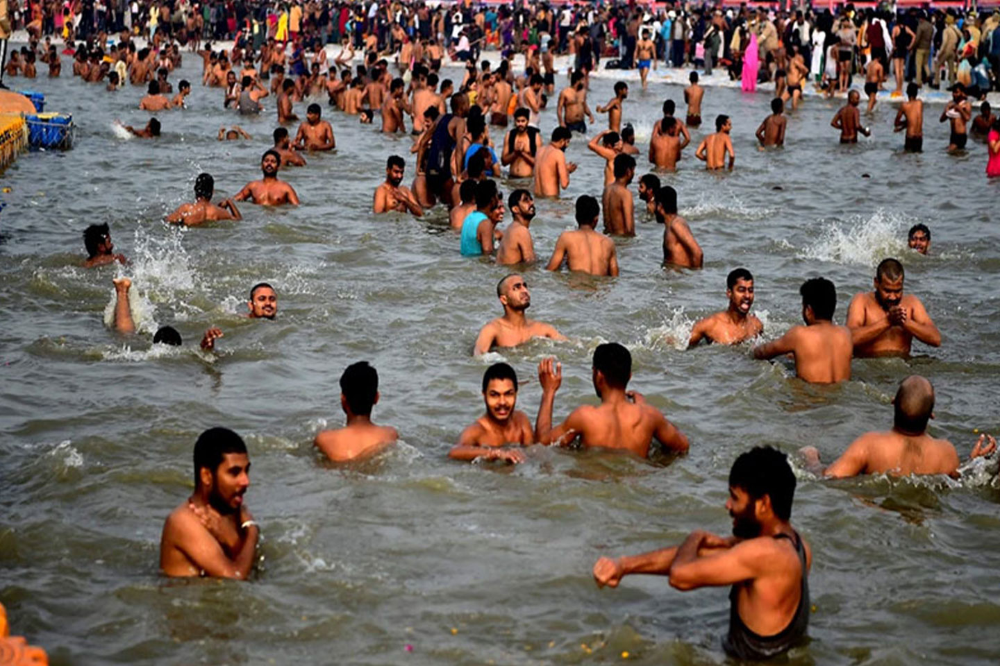
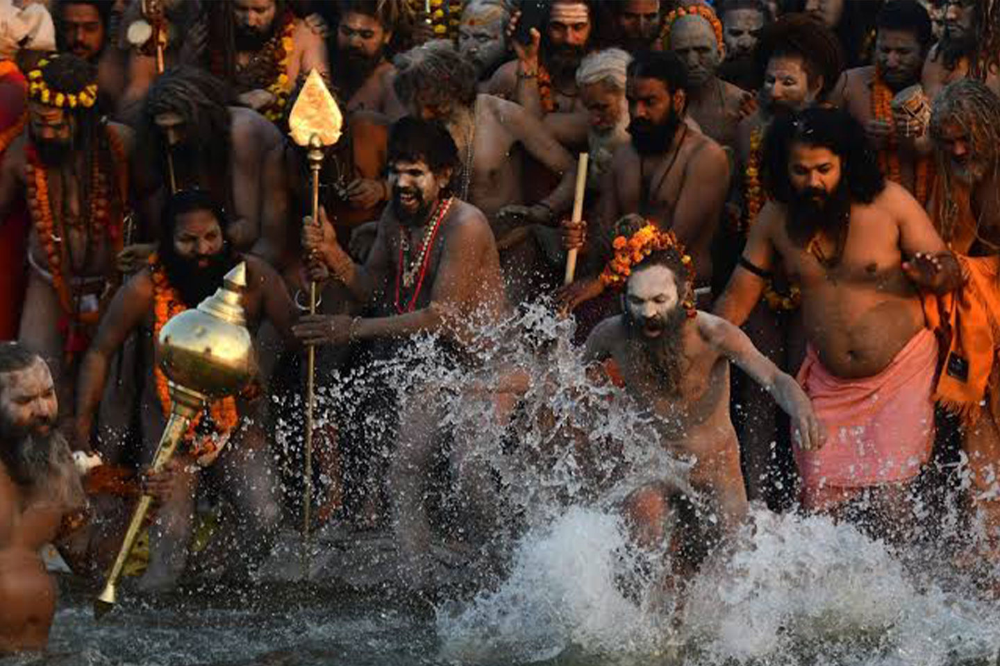
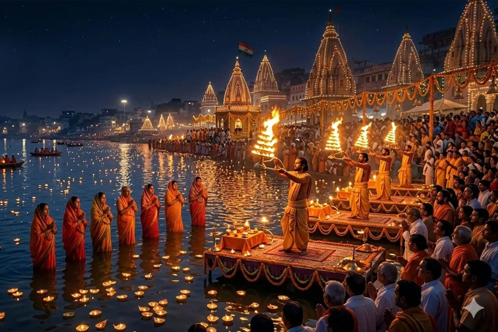
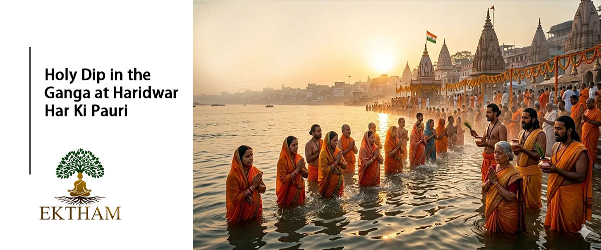
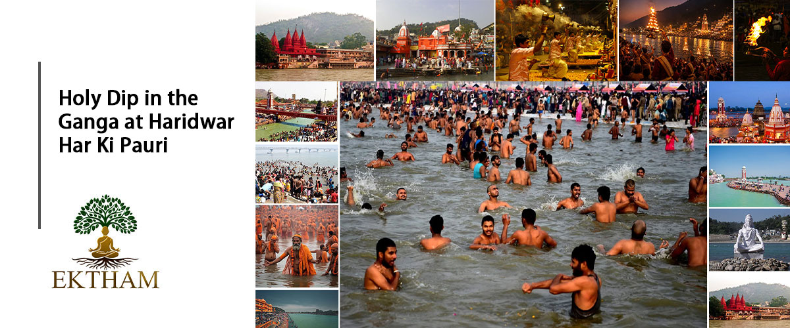

A visit to Haridwar is incomplete without experiencing a Holy Dip (Ganga Snan) in the sacred River Ganga, especially at the iconic Har Ki Pauri. Situated where the Ganga emerges from the Himalayan foothills and enters the plains, Haridwar is regarded as one of the most important Hindu pilgrimage destinations in India.
For millions of devotees, bathing in the Ganga is not simply a physical experience but a deeply spiritual ritual. According to Hindu belief, the sacred waters of the Ganga purify the body, mind and soul and help devotees seek blessings, peace and spiritual liberation. The district administration describes Haridwar as one of the four sacred cities associated with the Kumbh Mela and highlights the special religious importance of bathing at Har Ki Pauri.
A Holy Dip at Har Ki Pauri is more than a sightseeing activity. It brings together faith, ancient tradition, the sacred Ganga, temple culture, prayer and the living spiritual heritage of India.
From the quiet first light of dawn to the spectacular glow of the evening Ganga Aarti, Har Ki Pauri offers a complete spiritual experience. During Kumbh, this experience reaches an extraordinary scale as pilgrims from across India and the world gather on the banks of the Ganga for sacred bathing, prayer and participation in one of India's most important religious traditions.
For a first-time visitor, the most memorable combination is early-morning Ganga Snan + temple visits + an evening Ganga Aarti at Har Ki Pauri.
Important: Ganga flow, bathing conditions, barricading, crowd restrictions and access to the river can change according to season, weather, festivals and administration orders. During Kumbh and major Snan days, visitors should follow official instructions and use only designated bathing areas.

The Haridwar district administration identifies Har Ki Pauri as a major historic and religious ghat and records that it was built by King Vikramaditya. Uttarakhand Tourism also describes it as one of the city's most famous ghats and a principal location for the daily Ganga Aarti.
A traditional belief connects the site with Lord Vishnu, whose footprint is said to be represented on a stone at the ghat. Another important belief associated with Har Ki Pauri is that drops of Amrit, the nectar of immortality, fell here during the divine events described in the Kumbh tradition.
The Ganges is one of India’s vast and sacred rivers. Bathing in the Ganges is referred to as Mahasnan (the Great Bath). The festival of Ganga Saptami 2026 also known as Ganga Jayanti—is celebrated on the seventh day (*Saptami*) of the month of Vaishakh. This divine river is also revered as the bestower of *Moksha* (salvation). It is believed that on this very day, this holy river descended from the heavens to Earth. Consequently, this auspicious day symbolizes the re-manifestation—or rebirth—of Mother Ganga upon the Earth. Bathing in the Ganges holds special significance on this particular occasion.

Haridwar is one of the four traditional locations of the Kumbh Mela, along with Prayagraj, Nashik and Ujjain. According to the traditional Kumbh legend, the festival is associated with the divine Amrit Kalash, or pot of nectar, connected with the Samudra Manthan. The Haridwar district administration explains that the traditional story associates the Amrit with four sacred locations, including Haridwar.
The Kumbh is celebrated at Haridwar in a twelve-year cycle, while an Ardh Kumbh is traditionally held six years apart. The sacred bathing ritual, known as Snan, is one of the central elements of the festival.
The next major Kumbh-related gathering in Haridwar is scheduled for 2027. The Uttarakhand government has been making preparations for the 2027 Kumbh, with permanent infrastructure works being planned and implemented ahead of the event.
The 2027 event is widely referred to as the Haridwar Ardh Kumbh, although the Uttarakhand government and religious authorities have also announced plans to organize and brand the event as a major Kumbh gathering.
The opening period begins around Makar Sankranti, with the festival continuing through the major bathing occasions and concluding around Chaitra Purnima. Exact bathing-day arrangements, access routes and crowd-management instructions can change according to official administration orders.
What Makes Kumbh Snan Special? During Kumbh, Haridwar transforms into a vast pilgrimage centre. Thousands of sadhus, saints, akharas, pilgrims and visitors gather along the Ganga.
The most important feature is the Amrit Snan, traditionally known as the royal or Shahi Snan. During these major bathing occasions, processions of akharas and saints become a major part of the spiritual and cultural spectacle.
For ordinary pilgrims, bathing in the Ganga during Kumbh is regarded as an especially auspicious act. However, on major Snan days, crowds can be extremely large and access to individual ghats may be regulated by the administration.